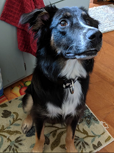
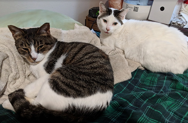

Who?
My name is Ethan Kohn, I'm here taking a class at Clark State Community College to get a degree in Computer Software Development. I want to transfer to Wright State after finishing my terms here and get a bachelor's degree, so I can get a quality job doing what I like or at least something I enjoy so I can indulge my favorite hobby.
What is your favorite hobby
I am a huge fan of video games and play them frequently in my spare time. From single player to online multiplayer games, I have hundreds to choose from on my PC, but I tend to come back to the same few every time. These video games include Destiny 2 - a sci-fi low fantasy multiplayer shooter, Final Fantasy 14 - a Massively Multiplayer Online Role-Playing Game (MMORPG), and somewhat recently I've tried and dabble in playing Apex Legends, a Battle-Royale style game where out of 20 teams of 3 players your team aims to be the last one alive. I am passionate about my video games and grew up with both them and computers so they're a big part of my life. Hopefully, once I graduate and get a good job, I can actually purchase new games and afford to resubscribe to Final Fantasy 14 which requires a monthly subscription to play.
What about stuff other than video games?
I grew up with computers and if it doesn't involve computers, I'm hardly interested. Everything I do nowadays involves them in some way, whether it's writing up this web page, playing games, troubleshooting for friends and family, or just chatting with friends using Discord - a chat program similar to Skype.
How about your family?
I live with my brother and parents, with another brother living out in Colorado with his wife and five children. I'm not independent enough to live on my own and I help take care of my brother as well who cannot drive. I also have a dog named Boomer and three cats who hide in my room from said dog. It's both annoying and convenient to still live at home, and I can't really complain because a lot of duties and responsibilities are off my back while living here.
What kind of food do you like?
Pizza.
Uhhh...
I'm a picky eater, so cheese pizza.
Anything else about you?
I drink too much soda, I'm a big fan of thinking for yourself (so the popular trend of memes and bandwagon mentality on sites like Reddit annoy me). I recently watched a play-through of a video game called Hypnospace Outlaw and it's an amazing silly recreation of the internet of 1999 and I think it's great. I like saving and editing clips of my video games using Nvidia Shadowplay, a recording program that's part of my graphics card, and a program called ShareX to make short clips of my video games to share with my friends. Sometimes I stream the video games. Not very often, though. No, you can't have my internet handle.